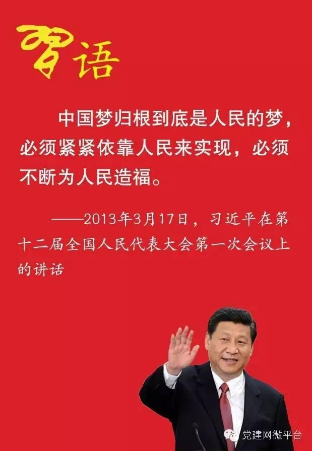

实现中华民族的伟大复兴，是近代以来中国人民最伟大的梦想，我们称之为“中国梦”，基本内涵是实现国家富强，民族振兴，人民幸福。中国梦即是国家之梦，也是个人之梦：即是长远之梦，也是近期之梦：即是宏大抱负之梦，也是温馨康乐之梦。
中国梦，是中国共产党第十八次全国代表大会召开以来，习近平总书记所提出的重要指导思想和重要执政理念，正式提出于2012年11月29日习总书记把“中国梦”定义为“实现中华民族伟大复兴，就是中华民族近代以来最伟大梦想”，并且表示这个梦“一定能实现”。“中国梦”的核心目标也可以概括为“两个一百年”的目标，也就是：到2021年中国共产党成立100周年和2049年中华人民共和国成立100周年时，逐步并最终顺利实现中华民族的伟大复兴，具体表现是国家富强、民族振兴、人民幸福，实现途径是走中国特色的社会主义道路、坚持中国特色社会主义理论体系、弘扬民族精神、凝聚中国力量，实施手段是政治、经济、文化、社会、生态文明五位一体建设。
2017年10月18日，习近平同志在十九大报告中指出，实现中华民族伟大复兴是近代以来中华民族最伟大的梦想。中国共产党一经成立，就把实现共产主义作为党的最高理想和最终目标，义无反顾肩负起实现中华民族伟大复兴的历史使命，团结带领人民进行了艰苦卓绝的斗争，谱写了气吞山河的壮丽史诗。习近平指出，实现伟大梦想，必须进行伟大斗争；必须建设伟大工程；必须推进伟大事业。